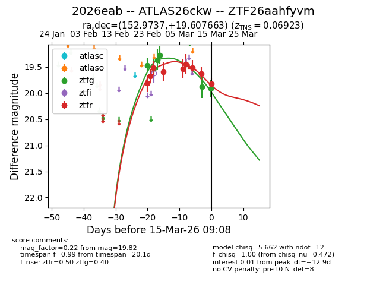
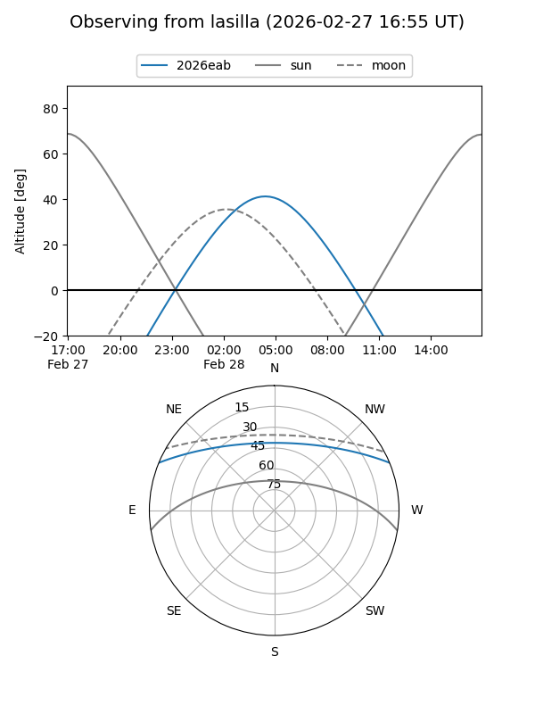
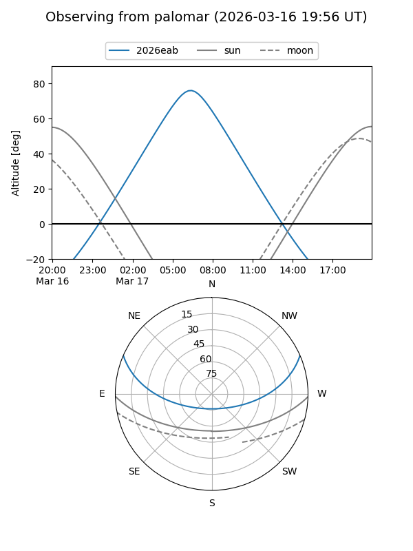
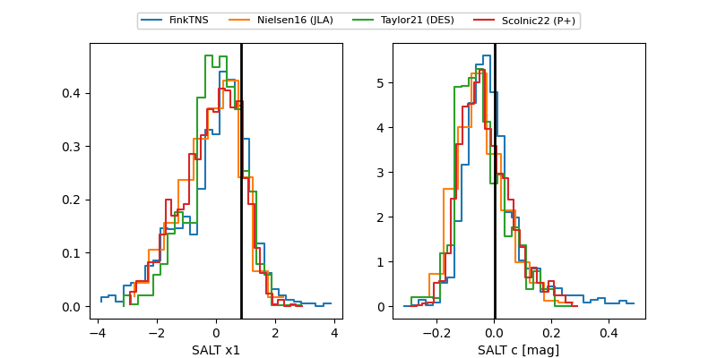

2026eab
Target 2026eab at 2026-03-15 09:10
Aliases and brokers:
FINK: link
Lasair: link
ALeRCE: link
TNS: link
YSE: link
alt names
ZTF26aahfyvm (ztf,fink_ztf)
2026eab (tns,yse)
ATLAS26ckw (atlas)
Coordinates:
equatorial (ra, dec) = 152.9737,+19.60766
equatorial (HMS+DMS) = 10:11:53.68,+19:36:27.59
galactic (l, b) = (215.8638,+52.78077)
Flags:
Photometry:
last ztfg=19.91, ztfr=19.82
6 ztfg, 9 ztfr detections
Lightcurve

Visibility


Additional plots
